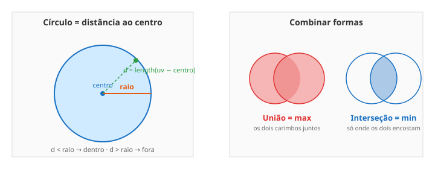

← Mapa do curso · Marco 1 · Módulo 4 de 6
Gradientes e ondas são lindos, mas e quando você quer desenhar uma coisa — um círculo, um ponto, um símbolo? O truque é genial e simples: pra cada pixel, pergunte "quão longe eu estou de um lugar?". Essa distância vira a forma. Neste módulo você desenha um círculo e depois combina formas como quem sobrepõe carimbos.
Você já sabe medir distância sem perceber. Da sua carteira até a porta da sala tem uma distância. Num shader, cada pixel mede a distância até um centro. Se essa distância for menor que um raio, o pixel está dentro do círculo (pinta de branco); se for maior, está fora (preto). Só isso desenha um círculo perfeito.

length(a). Você não precisa escrever a raiz — mas é ela ali dentro.
O playground abaixo desenha um círculo branco. Mexa nos sliders: raio muda o tamanho,
e centro X/centro Y movem ele pela tela. Repare na borda: é levemente
macia (lembra o smoothstep do módulo passado? está aqui de novo).
Sem mexer ainda — preveja: pra deixar o círculo no canto inferior esquerdo,
os valores de centro X e centro Y têm que ser altos ou
baixos?
centro X = ______ · centro Y = ______
Agora teste. Dica: lembra que Y = 0 é embaixo.
Cada forma vira um número: 1 dentro, 0 fora (uma "máscara"). Pra combinar duas máscaras você usa duas funções:
max(a, b) — fica branco onde qualquer uma das
formas está. Os dois carimbos juntos.min(a, b) — fica branco só onde as duas
se sobrepõem. A "lente" do meio.max é união e min é interseção?max)
é 1. Na interseção, as DUAS precisam ser 1 → o menor dos dois (min) só é 1 quando
ambas são.length por outra medida de distância (tipo o maior entre
abs(x) e abs(y)). É a mesma ideia de "distância vira forma" — só muda
a régua. Fica de desafio.min/max
funcionarem como união/interseção. Se você inverter (1 fora, 0 dentro), o max vira
interseção e vice-versa. Confira sempre o sentido do seu smoothstep.
Estas linhas montam um shader de círculo, mas estão fora de ordem. No papel, numere de 1 a 4 na ordem certa pra que ele compile e desenhe:
( ) gl_FragColor = vec4(vec3(shape), 1.0);
( ) void main() {
( ) float shape = smoothstep(0.25, 0.24, d);
( ) float d = length(v_uv - vec2(0.5, 0.5));
Dica: d precisa existir antes de ser usado; e o main abre a chave.
O shader abaixo já calcula DUAS máscaras de círculo: c1 e c2. Mas só
está mostrando o primeiro. Sua missão: faça a união dos dois — os dois círculos
aparecendo juntos. Dica: você aprendeu que união é max. Edite, dê Test Drive
e clique Conferir.
Ligue cada termo ao seu significado (escreva a letra):
length A. fica branco onde as DUAS formas se sobrepõemmax B. distância de um ponto a outromin C. união: branco onde QUALQUER forma está← Anterior: Matemática que Vira Imagem · Próximo: Dando Vida — Animação →